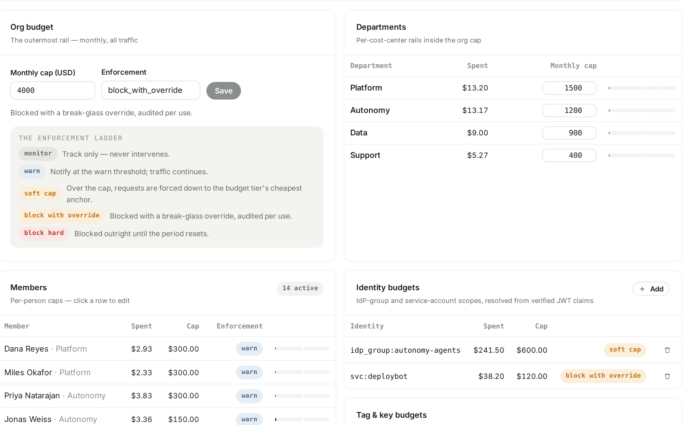
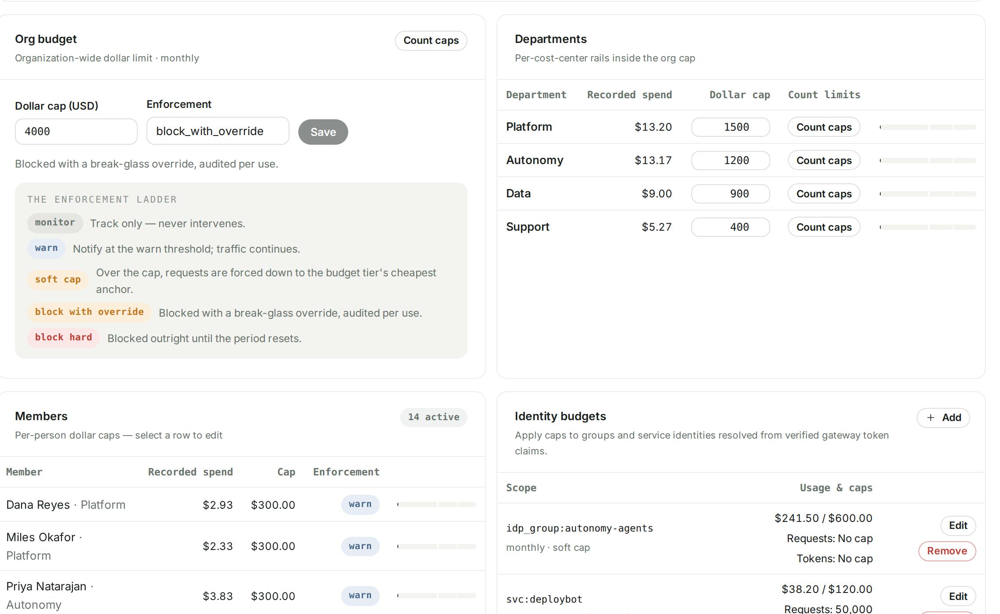
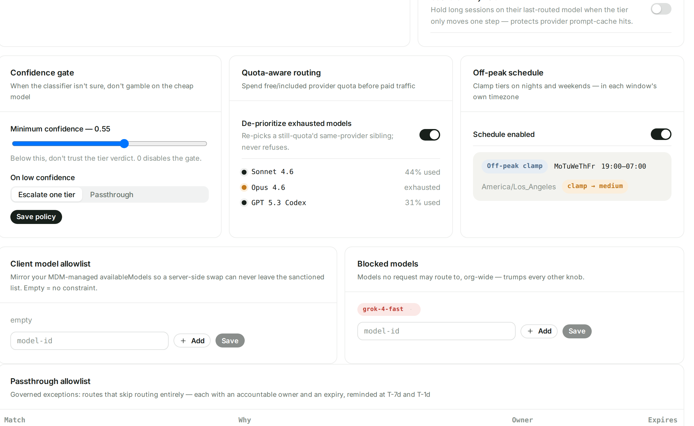
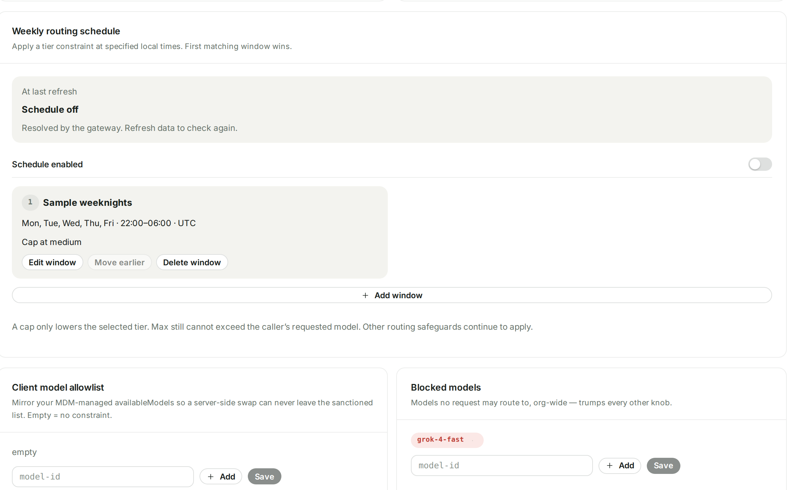
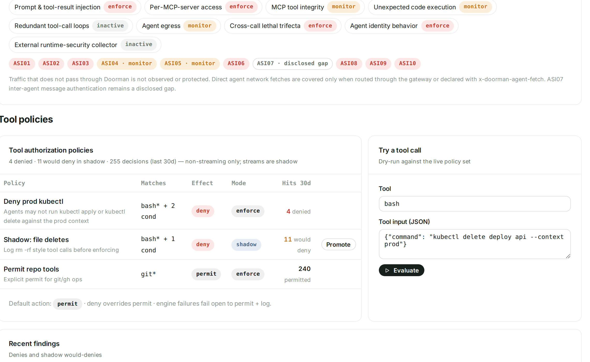
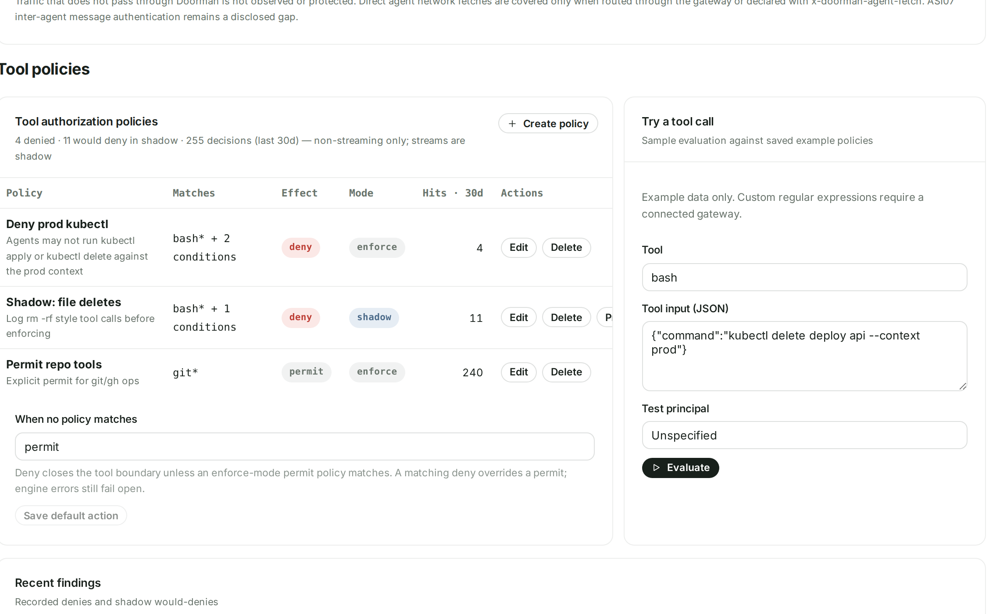
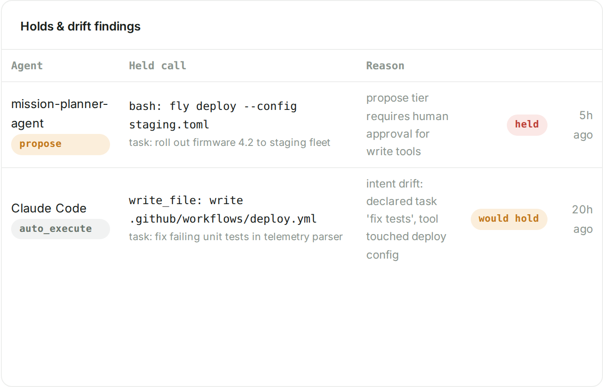
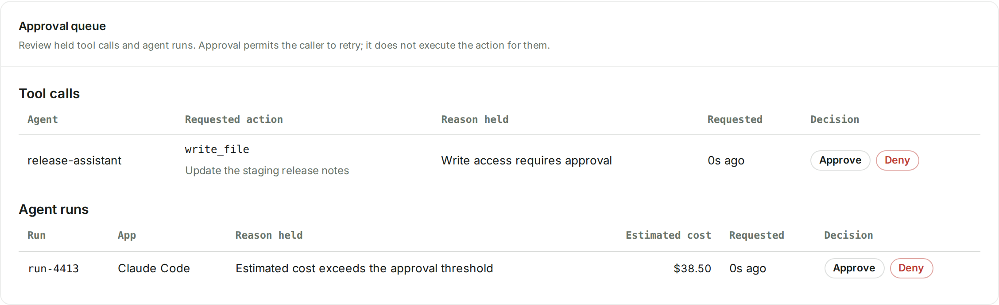
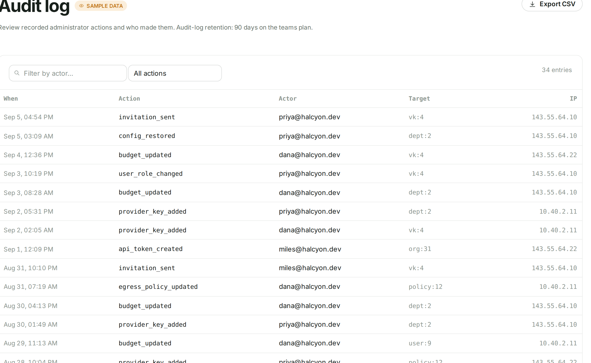
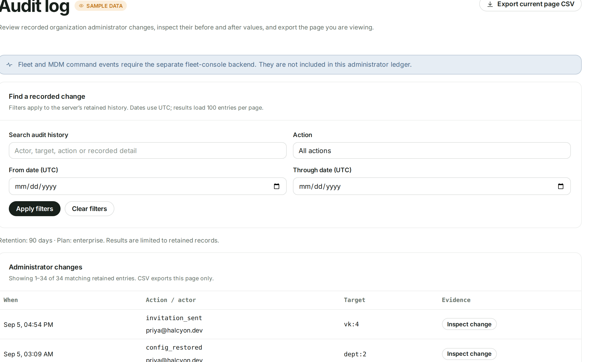

01 / Spend → Budgets
Limit requests and tokens
Look for the new Count caps buttons beside Org budget and each department.
Organization and department budgets had dollar inputs.

Open this page before ↗Count caps opens request and token limits for these same scopes.

Open this page now ↗02 / Routing → Routing desk
Edit the weekly routing schedule
Look for Edit window, Delete window and Add window.
Off-peak schedule showed a configured window and an on/off control.

Open this page before ↗Add, edit, reorder or delete individual schedule windows.

Open this page now ↗03 / Protection → Agent security → Tool policies
Create and manage tool policies
Look at the policy table header and the actions beside each policy.
Existing policies could be inspected, tested and promoted.

Open this page before ↗Create policy and per-row Edit/Delete controls complete the authoring flow.

Open this page now ↗04 / Protection → Agent security → Autonomy tiers
Decide what an agent may retry
Approval permits a retry; it does not execute the action.
Held calls appeared in a findings table without decision buttons.

Open this page before ↗A separate queue provides Approve and Deny for held calls and agent runs.

Open this page now ↗05 / Compliance → Audit log
Find and inspect an administrator change
Look for Find a recorded change and the Evidence column.
The ledger offered an action filter and CSV export.

Open this page before ↗Text search, UTC date filters and Inspect change make individual records easier to investigate.

Open this page now ↗